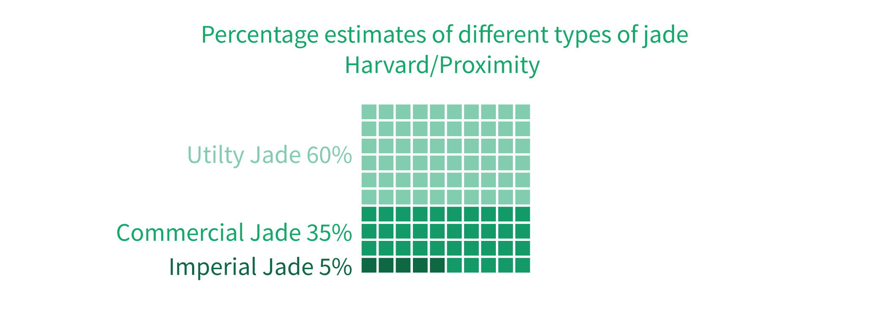

How much is Myanmar's jade industry worth?
In 2015, the international NGO Global Witness published a report called Jade: Myanmar's "Big State Secret", in which they estimated the total value of Myanmar's jade industry in 2014 to be worth as much as US$31 billion – roughly equal to 50% of the country's GDP.
That same year, Myanmar's first EITI (Extractive Industry Transparency Initiative) Report was released, which stated that the jade sold at official emporiums in 2014 was valued at US$ 1.5 billion.

This big difference between the two values show just how difficult it is to estimate the total value of Myanmar's jade industry. Clear and definitive data about the sector is very hard to find, and most estimates rely on a lot of assumptions.
In this article, we will visually demonstrate how such as estimate as calculated. We will replicate the method used by Global Witness to estimate the total value of jade produced in 2014, proceeding step-by-step in order to understand what the data tells us and what is unclear.
Working in our favor is 2 extra years' worth of data since the Global Witness report, as well as more detailed data from the Myanmar Gems Enterprise.
Before we begin, let's break down how what we need in order calculate the value of jade. We start with this very simple formula:

It's simple enough to begin with. If we can find out how much jade was produced, and what price it was sold at, we can calculate the value. But it get complicated once we take into account the fact that not all jade is created equal – there are 3 types, and some are much more valuable than others.
As for the quantity produced, we only have data on the total amount of jade produced, not broken down into how much of each type of jade is produced. Moreover, we don't know the prices for the different types of jade that is sold in the entire sector, but only for the stones that are sold at official government gems and jade emporiums, which only account for a small fraction of the total jade produced each year.

In addition to all these uncertainties, the quantities, prices and value of the jade sector also fluctuates significantly from year to year.
Fluctuations – 2014 was a special year
We began by looking at Global Witness' estimate that the total value of jade produced in 2014 was US$ 31 billion. At first glance, you might think that this value is approximately the same each year, but this is not the case.
First, let's look at how the total quantity of jade produced varies from year to year. Myanmar's Central Statistical Office compiles this data, and it is also the same data that Global Witness used in their calculations. We can see that 2014 marks the lowest quantity produced in about a decade.
Next, let's look at how the prices fluctuate. We don't have the average prices for the sector as a whole, but we do have the average price of uncut/unprocessed jade that was exported to China from the UN's trade statistics. Prices of jade exports climbed steeply in 2013 and 2014 but came crashing down in 2015.
Finally, let's look at the total value of exports to China. Since we cannot directly see the total value of the whole sector, the next best thing is the see how much of it is officially exported to the largest market. In 2014, the total value of jade exports to China increased tenfold from the previous year, and quickly decreased by a similar amount in the year after.
This goes to show that 2014 is a pretty atypical year for the jade sector. Therefore, whatever methods we use to estimate the value of jade produced in that year, we can safely assume that the total value for other years will be significantly lower. With that in mind, we go back to our calculation of the value of the jade sector in 2014.
But before we dive into the numbers, we need 2 pieces of context: what are the types of jade and how it is officially sold?
What the are types of jade?
Commodities such as gold or oil have pretty standard prices for each unit. Each piece of jade, on the other hand, is unique, and putting a price on it is a very complicated and subjective process.
Jade mined in Myanmar is composed of the mineral jedeite. It can be found in stones that vary in size from as small as a pebble to boulders that are taller than a human. Every stone has its distinct hues and patterns, and putting a price on it is a very complicated and subjective process. In addition, it is very hard to tell the exact quality of a stone that has not been cut because you need to examine the internal structure of the stone to determine the quality.
However, there are 3 broad categories that jade produced in Myanmar is divided into, ranging from the rarest and most expensive imperial jade, to the least rare and least expensive utility jade.
Imperial jade is the most valuable and is made into high-end jewellery.
Commercial jade is usually made into carvings and bangles and is of medium quality.
Utility jade is the lowest grade, and is made into tilings and carvings, as well as cheap jewellery.
What we would ideally like to know is, out of the total quantity of jade produced, what percentage of that figure is imperial, commercial and utility jade respectively.
Harvard Ash Center and Proximity Designs conducted an assessment of the Myanmar jade industry in 2013, and based on interviews with industry leaders, they estimated that the percentage composition of the various types of jade is as follows:
These percentages were used in Global Wtiness' estimates, in conjunction with another set of percentages that were derived from the jade sold at the official emporiums. We will now look at how percentages were derived from emporium data, and what actually goes on at an emporium.